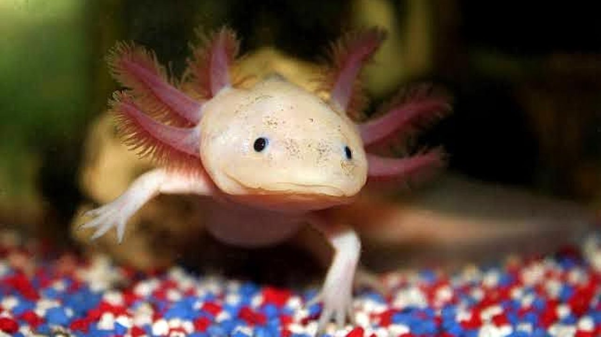

Mis proyectos
Estos son algunos proyectos que he creado recientemente...




Tengo carrera técnica en sistemas automotrices, actualmente curso mi noveno semestre de la carrera ingenieria biónica. Amo colaborar en la parte de biomecánica, sobre todo en los laboratorios de pesados de la UPIITA - IPN. Ademas estoy definiendo mi trabajo terminal sobre equipo de rehabilitación tomando como base la ergonomía y la antropometria. Amo ver series y peliculas romanticas, disfruto dibujar y pintar en mi tiempo libre, asi como visitar museos.
Arduino
Desarrolló dispositivos de monitorización de la salud con Arduino. Esto puede incluir la medición de señales biomédicas, como la frecuencia cardíaca, la temperatura corporal y la actividad muscular, para ayudar en la rehabilitación y el seguimiento de pacientes con prótesis y otros dispositivos biónicos
Procesamiento de imágenes
Manipuló imágenes digitales con el objetivo de mejorar su calidad, extraer información útil, o realizar tareas específicas de análisis. Este proceso involucra una serie de operaciones y técnicas que se aplican a una imagen digital para obtener una imagen procesada con características o información deseada
Estudiante
Soy estudiante de la carrera de ingenieria biónica, en la especialidad de Biomecánica y estoy trabajando en la mejora de los equipos de rehabilitación.

Daniela Aguilar ha desarrollado de manera eficiente sus habilidades en programación front-end, demostró ser una gran estudiante y bastante colaborativa con sus compañeras.
Nancy Salazar
Instructora Front-End en Tecnolochicas PRO.

He colaborado con Daniela Aguilar como desarrollador frontend. Es una gran colega, profesional y apasionada en lo que hace.
Sofia González
Estudiante de Tecnolochicas

He tenido la oportunidad de ver la manera de trabajar de Daniela Aguilar y puedo decir que es impecable en lo que hace, la recomiendo ampliamente ya que tiene la facilidad de aprender y realizar trabajos de calidad..
Alexandra Coello
Estudiante de Tecnolochicas
He tenido el gusto de participar en el curso de Tecnolochicas con Daniela Aguilar, donde ha demostrado ser una buena compañera. Su habilidad en Html, Css y Java script, a permitido en ayudar a sus compañeras del curso e implementando nuevas estrategias de aprendizaje. Fue un placer de conocerte y trabajar de nuevo contigo.
Cristina Becerril
Pasante de Lic. Geolgía Ambiental y Recursos Hídricos.
Daniela Aguilar muestra un rápido progreso en la adquisición de habilidades técnicas clave y una gran disposición para colaborar en proyectos. Su actitud positiva y su voluntad de aprender constantemente son cualidades valiosas en el campo de la programación. No tengo dudas de que seguirá creciendo y haciendo contribuciones significativas como desarrolladora frontend en el futuro.
Anel Montes de Oca Robles.
Mentora de apoyo en Tecnolochicas Pro.